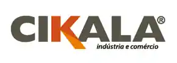

CIKALA
Empresa de lonas técnicas, coberturas e soluções de proteção.
Conhecer empresa →CIKALA e SHADE são empresas distintas. Conheça seus portfólios e oportunidades comerciais internacionais.

Empresa de lonas técnicas, coberturas e soluções de proteção.
Conhecer empresa →

Empresa de telas de sombreamento e soluções para áreas externas.
Conhecer empresa →

Shade Sail é uma linha de produtos, não uma terceira empresa.
Shade Sail →